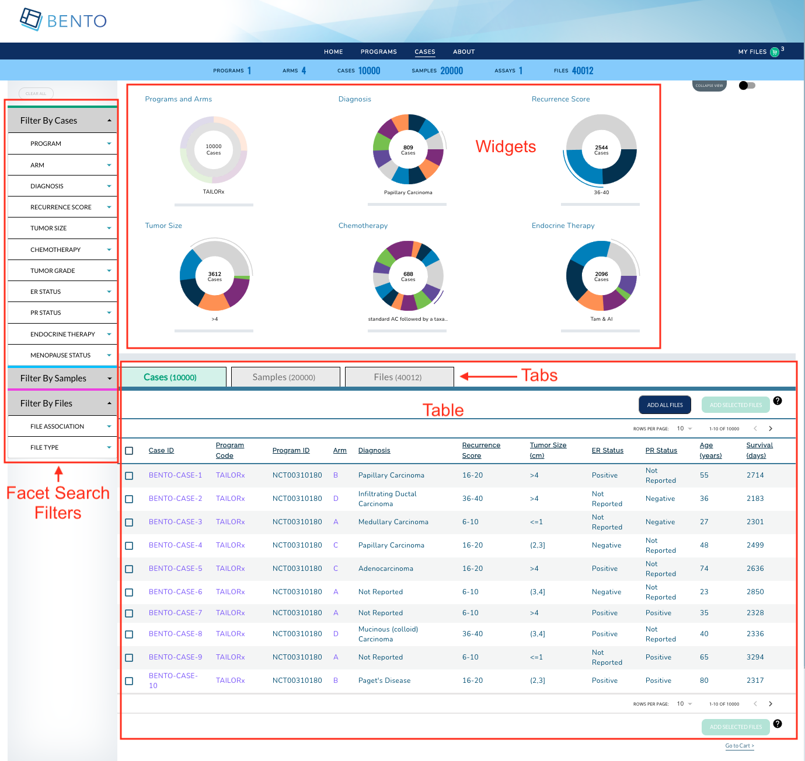

7. Dashboard¶
The Dashboard provides the end user with several capabilities (a) filter data entities of in interested via faceted search (b) view graphical summaries of data entities and (c) select data entities for further exploration.

Dashboard. Displayed are the configurable elements of a Bento Dashboard. These are: Dashboard Sidebar Filters, Dashboard Widgets and Dashboard Table.
7.1. Prerequisites¶
The files that specify the configuration parameters of the Dashboard are stored in the GitHub
https://github.com/CBIIT/bento-frontend(representing your GitHub username asYOUR-USERNAME). Create a local clone of your fork into a local directory, represented in these instructions as$(src).Configuration Parameters for Dashboard elements can be specified in the file:
$(src)/bento-frontend/src/bento/dashboardData.js.All images and icons that you use in your Bento instance should be accessible via a public url.
Please review the list of GraphQL queries to select query type(s) that return your data of interest.
7.2. Dashboard Widgets¶
Dashboard Widgets provide a graphical summary of the key data entities in your data sharing platform. In this version of Bento, you can add 3, 4 or 6 widgets. If you add more than 6 widgets, Bento will display the first widgets without any error or warning message.
7.2.1. Configuring the Dashboard Widgets¶
Open
$(src)/bento-frontend/src/bento/dashboardData.js.Under
widgetsDataadd an object {type: ,label: , dataName: , datatable_field: ,show:} to represent your widget.Set the field
typeto the type of widget you want to display. Valid values are ‘donut’ and ‘sunburst’.Set the field
labelto the display label for your widget.Set the field
dataNameto the name of the GraphQL API query that returns data for your widget.If your widget is of type ‘donut’, set the field
datatable_fieldto the specific field in the GraphQL API query that returns data for your widget.Sunburst widgets display two types of data within a single plot. If your widget is of type ‘sunburst’, set the fields
datatable_level1_fieldanddatatable_level2_fieldto the specific fields in the GraphQL API query that returns data for your sunburst. The fielddatatable_level1_fielddrives the inner ring of of the sunburst. The fielddatatable_level2_fielddrives the outer ring of of the sunburst.Set the field
showto ‘true’ to display the widget or to ‘false’, otherwise.Enter all GraphQL API queries that drive the widgets in
GET_DASHBOARD_DATA_QUERY.
Example:
...
export const widgetsData = [
{
type: 'sunburst',
label: '<Widget Label>',
dataName: '<GraphQL API query that returns data for widget>',
datatable_level1_field: '<GraphQl API query field that returns data for inner ring of sunburst>',
datatable_level2_field: '<GraphQl API query field that returns data for outer ring of sunburst>',
show: '<true|false>',
},
{
type: 'donut',
label: 'Diagnosis',
dataName: '<GraphQL API query that returns data for widget>',
datatable_field: '<GraphQl API query field that returns data for donut>',
show: '<true|false>',
},
...
]
...
export const GET_DASHBOARD_DATA_QUERY = gql`{
GraphQL API query{
API query field
}
}
7.3. Dashboard Facet Search Filters on the Sidebar¶
The dashboard’s facet filters allow an end user to search for data of interest by applying multiple filters, based on faceted classification, of stored data entities.
The facet filters and the sidebar are configured as described in Dashboard: Facet Search Sidebar
7.4. Dashboard Tabs and Tables¶
The Dashboard Table can be configured to list key data entities in your data sharing platform along with a list of key data entity attributes. In the Bento reference implementation the Dashboard Table list the cases (or study subjects) in the program.
Dashboard tabs and tables are configured as described in Dashboard: Tabs and Tables